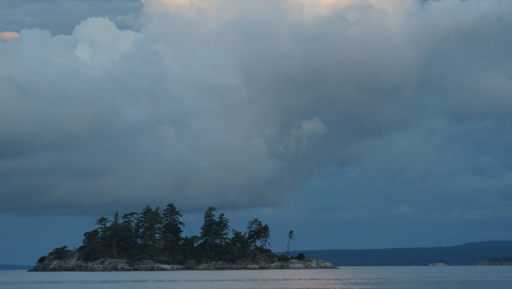

portland island

Portland Island is in the Gulf Islands. We avoid it most times because it is very sought-after, but we understand why because hiking on the island is wonderful. All of the island is park land, with many different trails, some challenging, some easy, throughout.
Princess Bay. Located to the south of the island, Princess Bay is the larger anchorage and can accomodate many boats. This bay is very, very popular, expect people to anchor close to one another. The bay isn't as shallow as the charts suggest, especially away from the middle. The bay is well-protected against any kind of north wind, but is exposed to winds from the south. Winds in the south of Haro can make it a bit bouncy in here. A reef guards the southern portion of the bay and it helps to break the ferry wash a bit. The waves here are more tolerable than they are in Royal Cove.
It is possible to leave the dinghy on the dock, or to beach it further to the northeast (a staircase leads to a campground). A very clean pit toilet is close to the campground. Cell coverage is not super strong in this anchorage.
Royal Cove. In busy times it is reccommended that all boats stern tie, although it is fine to swing if anchoring in the deeper portion of the bay further to the west, or to the west side of the little island to the north. This anchorage gets a lot of wakes from both ferries and traffic in Satellite Channel. The bottom is very kelpy, so watch your set, and be careful not to anchor not too far from the wall(to leave room for others) or over someone else's anchor. Boats anchoring on the north wall should watch for the reef extending from shore at low tide.
The bay is only shielded from south and southeast winds, east winds waves can curl into the anchorage and make it a bit bumpy. Southwest winds also curl around the island and penetrate between Portland Island and the private island to the north. Trail access is easy, an outhouse is nearby on land. Cell coverage is excellent in this anchorage.